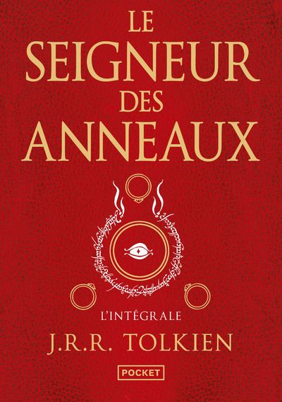

Le Seigneur des Anneaux (Nouvelle traduction) - Intégrale
- Auteur
- J.R.R. Tolkien
- Genre
- High Fantasy
- Date de parution
- Le 13/09/2018
- Editeur
- Prix
- 22€
- Résumé
-
Une contrée paisible où vivent les Hobbits. Un anneau magique à la puissance infinie. Sauron, son créateur, prêt à dévaster le monde entier pour récupérer son bien.
Frodon, jeune Hobbit, détenteur de l'Anneau malgré lui. Gandalf, le Magicien, venu avertir Frodon du danger. Et voilà déjà les Cavaliers Noirs qui approchent...
C'est ainsi que tout commence en Terre du Milieu entre le Comté et Mordor. C'est ainsi que la plus grande légende est née.